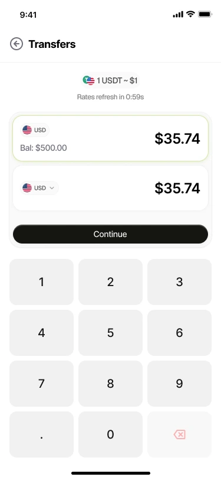
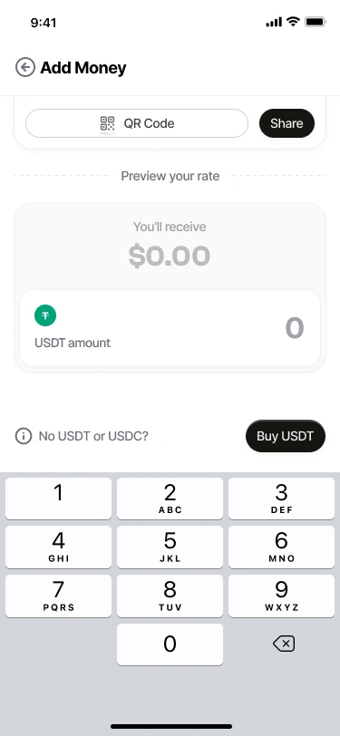

For your first step
New to Pace? Take a quick look at how to add money and send it on.
See the stepsSend money home or make your next payment abroad.
Fund with local currency or stablecoins and reach bank accounts in 50+ countries.
A gift for someone you miss. A payment you’ve planned for. See the rate and the amount they’ll receive before you send, so you can make the choice that works for you.
See your rate in Pace
Example app screen. Check the app for your current rate.
Help with the bills back home. Send a birthday surprise. Or pay someone who helped bring your plans to life.
Send USDT from your Pace wallet to bank accounts in 50+ countries. They receive local money, ready to use.
Make your first sendBring money from your bank, or deposit the USDT or USDC you already hold. Choose the way that fits your day.
Open Add Money to see your available currencies and funding options. Your next move starts from there.
Get started with PaceSome days you’re ready to send. Other days you’re still making plans. Keep USDT in your Pace wallet until you decide.
Your balance and recent activity stay together, so it’s easy to see where you stand.
Find your Pace
App preview · illustrative balances
New to Pace? Take a quick look at how to add money and send it on.
See the stepsFrom funding your wallet to checking a rate, find the answers that help you get going.
Read the FAQsSomething on your mind? Send our team a message. We’re here to help you find your way.
Email the teamYes. You can start with a bank transfer in a supported local currency. You don’t need to own crypto already. If you have USDT or USDC, you can deposit those too. Open Add Money to see the options available to you.
Pace supports bank payouts in more than 50 countries. Check their destination and currency in the app to see what’s available. Your recipient receives local money in a supported bank account.
Yes. Enter your amount and you’ll see the exchange rate and what they’ll receive before you confirm. Rates can change, so take a look each time you send.
It depends on where you’re sending and the payout method. You can follow your transfer’s status in the app. If you need a hand, email hello@pacetrf.com.
More moments shared. More plans taking shape.
Download Pace and make your first move.